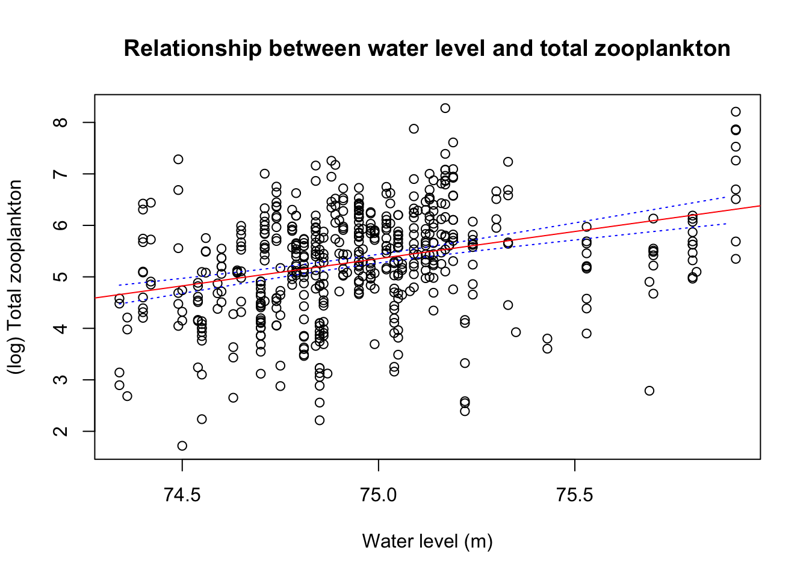
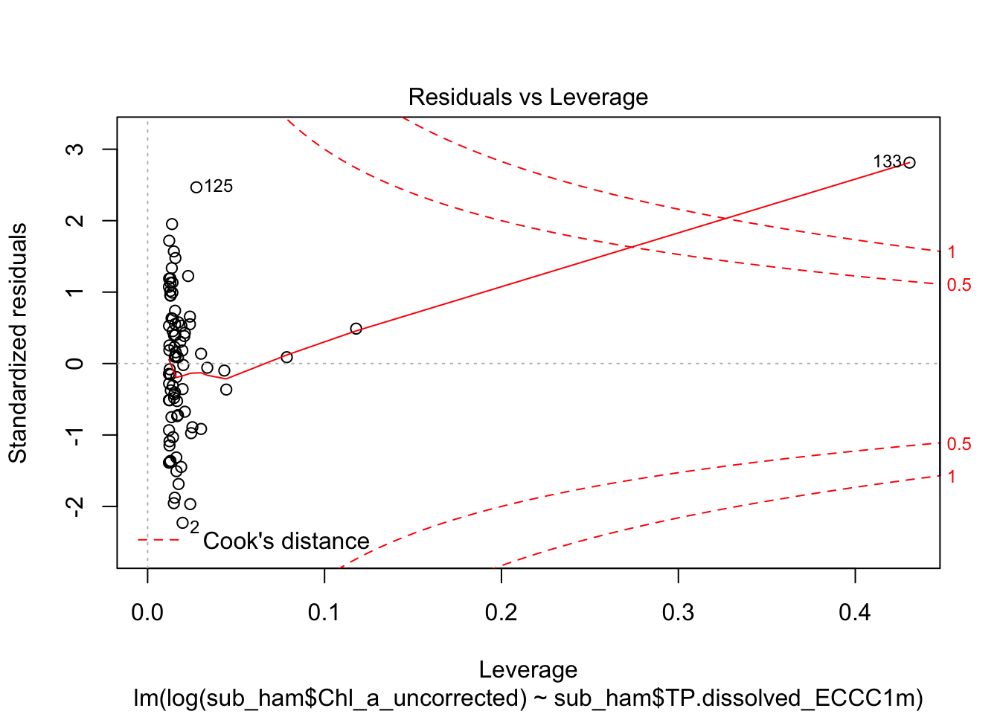
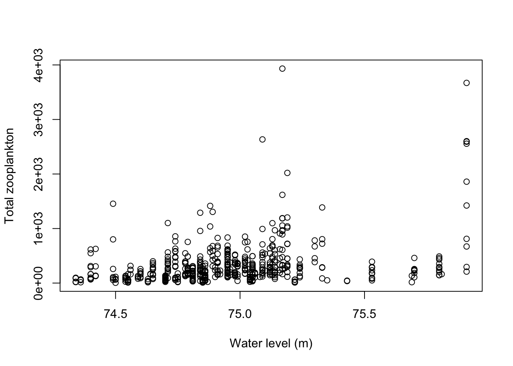
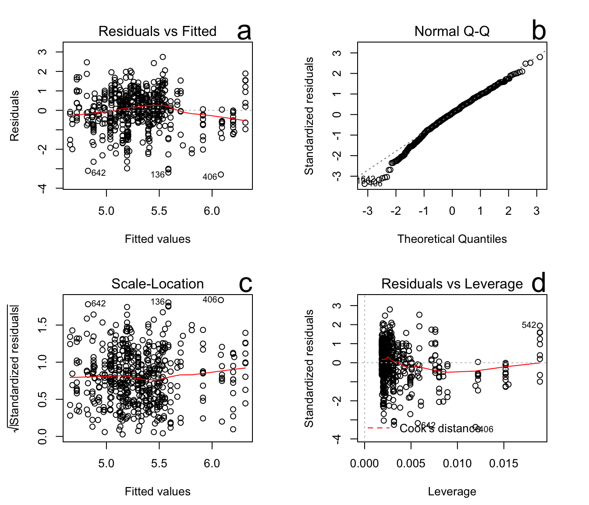
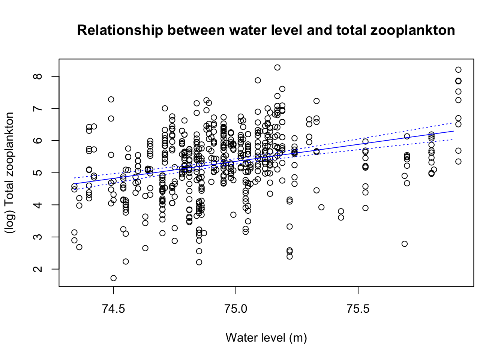

4 Linear regression
4.0.1 Introduction
A linear regression estimates the parameters of a linear relationship between a response (y, the depdendent variable) and an explanatory factor (x, an independent variable) as:
\[y=\beta_0+\beta_1x+\epsilon\]
Significance testing is used to determine if the slope of this relationship is significantly different than zero. For example, for our Hamilton Harbour data, we will be testing for a relationship between water level (our predictor) and total zooplankton counted in a net grab (our response).
4.0.2 Linear regression using water level and total zooplankton
The lm() (or linear model) function runs a linear regression where we indicate the response and predictor variable using the “~” symbol.
Try it now
Use the code below to regress total zooplankton on water level. Notice we will change the column names with the spaces first using the sub() function (i.e., replace “water level” with “water.level”), since spaces are always a pain when using code.
# change column names to replace space with '.'
colnames(ham) = sub(" ", ".", colnames(ham))
# save linear regression results
waterlzoo.lm <- lm(total.zoop ~ water.level, data = ham)
# print regression results
waterlzoo.lm
Call:
lm(formula = total.zoop ~ water.level, data = ham)
Coefficients:
(Intercept) water.level
-30814 415 Notice that when we simply try to print the regression object, the output is very brief: just the intercept and slope estimate. The regression object is a list data structure and actually does contain a lot of information. We can access a nicely formatted summary of all this information using the summary() function.
Try it now
Use the summary() function on the list data structure of your regression output
# print a summary of the regression results
sum_lm = summary(waterlzoo.lm)
sum_lm
Call:
lm(formula = total.zoop ~ water.level, data = ham)
Residuals:
Min 1Q Median 3Q Max
-618 -184 -85 76 3515
Coefficients:
Estimate Std. Error t value Pr(>|t|)
(Intercept) -3.08e+04 3.92e+03 -7.87 2.0e-14 ***
water.level 4.16e+02 5.22e+01 7.95 1.1e-14 ***
---
Signif. codes: 0 '***' 1e-03 '**' 1e-02 '*' 5e-02 '.' 0.1 ' ' 1
Residual standard error: 382 on 537 degrees of freedom
(203 observations deleted due to missingness)
Multiple R-squared: 0.105, Adjusted R-squared: 0.104
F-statistic: 63.3 on 1 and 537 DF, p-value: 1.08e-14Let’s go through this output. We can:
- check for the significance of the relationship,
- determine whether the relationship between the predictor and response is positive or negative, and
- determine how much of the variance in the data is explained by this model.
This first thing to notice is whether or not we have a signficant relationship. The output provides a t-value and probability for the null hypothesis that the intercept and slope have values of zero. We can see the p-value for the slope test is 1.078^{-14} and indicates a significant relationship.
Notice that if we just wanted to grab some of this information (e.g., to create a table in a publication) we can just subset the list object
Try it now
Subset the list object to get the information about the slope, and the R2 value.
sum_lm$coefficients[2, ] Estimate Std. Error t value Pr(>|t|)
4.15e+02 5.22e+01 7.95e+00 1.08e-14 sum_lm$adj.r.squared[1] 0.104The estimate of the slope is positive, although the model does not explain much of the variance in the data.
This could be because we have violated one or more of the assumptions of the regression. And of course whenever we use a regression we should test to see if we have met these asumptions.
4.0.3 What are the assumptions of a linear regression?
The most basic assumptions we make when we use linear regression is that
- there is indeed a linear relationship (rather than a non-linear relationship) between the predictor and the response.
However, there are also assumptions about the variance in the data. We also assume:
- Variance in the data about this linear relationship is normally distributed
- Variance is consistent across all the values of the independent variable (e.g., there is not greater variance for larger values of the predictor).
- Each observation is independent of one another (there is no significant correlation between the independent variable values)
4.0.4 How do you evaluate the assumptions of a linear regression?
We can get a quick assessment of whether we have violated some of these assumptions by creating diagnostic plots. These plots display the residuals of the linear regression in various ways.
To see these plots we can just use the following plot() command, and hit return to display each of the four plots in turn.
plot(waterlzoo.lm)
a.
The first plot, Residuals vs Fitted, shows the regression residuals vs the fitted values.The residuals should be randomly distributed around the horizontal line representing a residual error of zero. There should not be a distinct trend in the distribution of points that might indicate non-linearity. The red line provides a summary of the distribution of points. On our plot this line slopes downwards.
b.
The Q-Q plot evaluates our second assumption: that the data variance about the fitted line is normally distributed. If the points on the plot follow the diagonal line, then the residuals are normally distributed. We can see here that we are not doing well, there is a big departure from the expected distribution.
c.
The Scale-Location plot is used to determine if our third assumption that the variance of the residuals is be consistent across all the values is being met (i.e., the variance in the data is homoscedastic). Again, there should be no obvious trend in this plot, but we are seeing an upward tilt indicating more variance at larger values of our predictor variable.
d.
The Residuals versus Leverage plot in the lower right shows each points leverage, which is a measure of its importance in determining the regression result. This plot can be used to determine if there are any highly influential points in the dataset (i.e. outliers), and is also an evaluation of our third assumption.
Superimposed are the contour lines for the Cook’s distance, which is another measure of the importance of each observation to the regression. Smaller distances means that removing the observation has little effect on the regression results. Distances larger than 1 are suspicious and suggest the presence of a possible outlier or a poor model. We have one or two influenctial points.
Here’s another example from a regression of Chl a vs TP at station HH6, which shows very clearly that one point in particular is having a big influence on the regression.

Actually, we probably should have plotted the data first to get some idea of what the data were like. Let’s do that now.
Try it now:
Plot our data
plot(x = ham$water.level, y = (ham$total.zoop), xlab = "Water level (m)",
ylab = "Total zooplankton")
The plot explains a lot of our problems with the model assumptions. There are some very large values relative to most observations. In general, count and biomass data has this kind of distribution: a lot of small values and a few very large ones so that the data variance about the fitted line is non-normal.
We can transform the population data using a natural logarithm to try and improve the normality. This is easy to do with the log() function. So we will run the regression on this transformed data and see if we are doing a better job meeting the model assumptions.
Try it now
Run a regression on log-transformed data
# save linear regression results
log_waterlzoo.lm <- lm(log(total.zoop) ~ water.level, data = ham)
summary(log_waterlzoo.lm)
Call:
lm(formula = log(total.zoop) ~ water.level, data = ham)
Residuals:
Min 1Q Median 3Q Max
-3.296 -0.554 0.073 0.663 2.744
Coefficients:
Estimate Std. Error t value Pr(>|t|)
(Intercept) -73.921 10.063 -7.35 7.6e-13 ***
water.level 1.057 0.134 7.87 1.9e-14 ***
---
Signif. codes: 0 '***' 1e-03 '**' 1e-02 '*' 5e-02 '.' 0.1 ' ' 1
Residual standard error: 0.982 on 537 degrees of freedom
(203 observations deleted due to missingness)
Multiple R-squared: 0.103, Adjusted R-squared: 0.102
F-statistic: 62 on 1 and 537 DF, p-value: 1.92e-14We see that our relationship is still signficant and positive under the transform.
Let’s check the diagnostic plots quickly
# save linear regression results
plot(log_waterlzoo.lm)
Our diagnostic plots look much better, particularly with respect to the normality of the resiudals.
4.1 Plot the data and predictions
Let’s create a plot with our fitted model shown together with the data. the data, and superimpose our fitted model
4.1.1 Get model predictions and confidence intervals
We will use the predict() function to calculate confidence intervals about our regression, and superimpose the model on the data plot using the lines() function.
First let’s just get the predicted regression line and the confidence intervals about this line. We do this by creating a continuous sequence of x values, and applying our model to these values.
Try it now
# creating a vector 'x' to predict total.zoop from waterlevel
# get min water level
min_water = min(ham$water.level, na.rm = TRUE)
# get max water level
max_water = max(ham$water.level, na.rm = TRUE)
# build a new data frame that has vector of xvalues from min
# to max in increments of 0.05
# create the sequence
x <- seq(min_water, max_water, by = 5e-02)
# create a new dataframe with this predictor
ndata = data.frame(water.level <- x)
# use this dataframe and the predict function to calculate
# confidence intervals
confidenceint <- predict(log_waterlzoo.lm, newdata = ndata, interval = "confidence",
level = 0.95)
cf = as.data.frame(confidenceint)4.2 Plot the data and predictions
We can then create a plot with these model predictions.
Try it now
Plot!
# create a plot with water level and total zooplankton use
# xlab(), ylab() and main() to put titles on the plot
plot(x = ham$water.level, y = log(ham$total.zoop), xlab = "Water level (m)",
ylab = "(log) Total zooplankton", main = "Relationship between water level and total zooplankton")
# add regression line to the plot
lines(cf$fit ~ x, col = "blue", lty = 1)
# lower bound confidence interval
lines(cf$lwr ~ x, col = "blue", lty = 3)
# upper bound confidence interval
lines(cf$upr ~ x, col = "blue", lty = 3)
4.2.1 Common mistakes
- Be careful when coding a linear regression using the lm() function that the independent and dependent variables are coded in the right order. i.e. lm(dependent variable~independent variable, data = yourdata).
4.2.2 References and resources
Phillips, N. D. (2018, January 22). Yarrr! The Pirate’s Guide to R. YaRrr! The Pirate’s Guide to R. https://bookdown.org/ndphillips/YaRrr/ * Check out chapter 15 on linear regression analysis